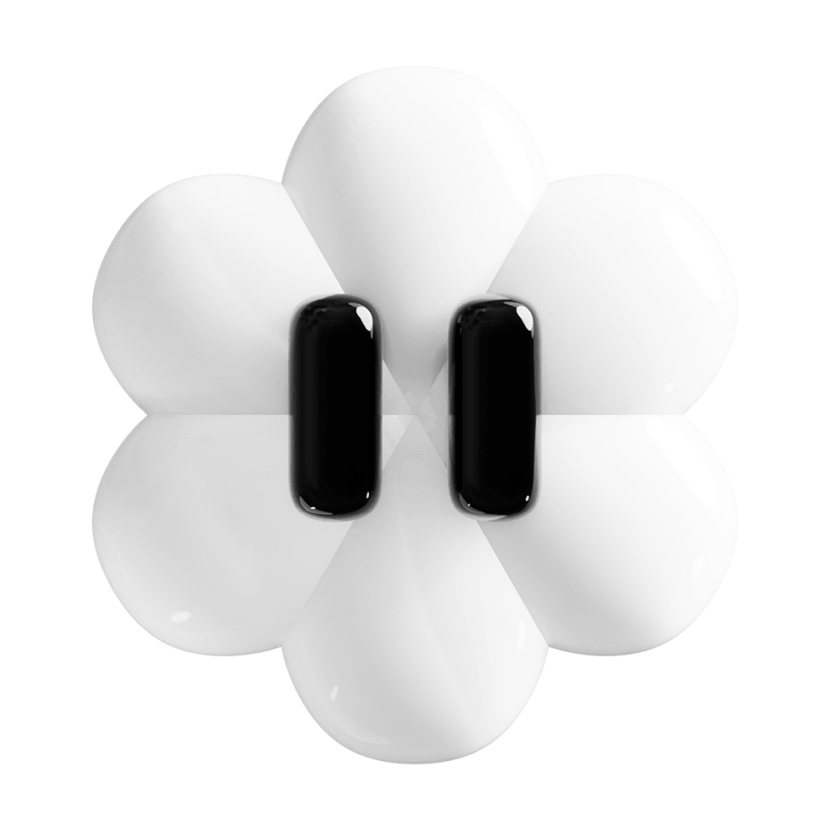

Bio
Diseñadora gráfica
en constante desarrollo
Entré al mundo del diseño hace unos años y descubrí un lugar lleno de posibilidades, en el que se me hace difícil elegir un único camino.
Veo el diseño como una herramienta capaz de desarrollar ideas que mejoran la vida de las personas y el espacio que nos rodea; facilitando, mejorando o sencillamente haciendo más bonito el día a día.
Para mi desarrollo personal y profesional considero la versatilidad y el aprendizaje constantes como imprescindibles para poder adaptarme a las nuevas necesidades y retos futuros...
Trayectoria
- 2018–2020
- Grado de Ilustración en I·Darte, Vitoria-Gasteiz.
- 2020–2024
- Grado en Diseño Gráfico en I·Darte, Vitoria-Gasteiz.
- 2024
- Especialización en Desarrollo Web Full Stack.